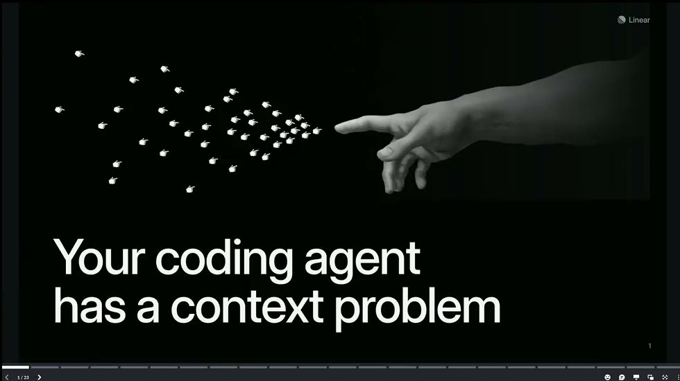

When agents move to the outer loop, context stops coming from a keyboard
Linear started in 2019 as an issue tracker built out of frustration with slow, buggy developer tools. In the seven years since, software engineering moved from early AI tab completion in 2021 to experimental coding agents in 2024 to cloud-orchestrated agents that run unattended.
Moor pushes back against claims that inference prices are about to climb. On his cost slide, model capability that cost 100 dollars three years ago costs five cents today, while task horizons on his METR chart double every four to seven months. In 2024, an engineer drove an agent inside a tight local loop and supplied missing context by hand. When agents run in the cloud for hours or days at a cost of pennies, nobody sits there starting, stopping, and spoon-feeding them. Context has to move out of the inner loop and into outer-loop systems that prepare and route it automatically.

“I think one of the main reasons is that the context kind of moves out of that inner loop and largely into the outer loop.”00:02:20
- Inference that cost 100 dollars three years ago now costs roughly five cents, while agent task horizons continue to stretch.
- Moving from hand-driven local agents to unattended cloud runs removes the human who used to supply context interactively.
- Outer-loop systems have to assemble and pass organizational context before and after an agent writes code.
Evidence: transcript 00:00:00, 00:02:20 · watch the shift to outer-loop agents
Thousands of locally valid diffs still produce an incoherent product
Abundant, cheap code changes how engineering teams fail. Implementation capacity stops being the constraint; the new failure mode is shipping thousands of locally reasonable pull requests that add up to a fragmented product. Moor illustrates the point with a Codex-generated mockup of a settings screen overflowing with toggles, the natural result of telling an agent to "just add another setting" every time a request arrives. Good software comes from restraint, consistency, and small trade-offs that reinforce one another.
An agent reading the repository sees types, functions, and tests, yet misses almost everything behind those lines. Moor's slide groups what source code leaves out into six buckets: intent (what user problem is being solved), history (which prior trade-offs shaped the current design), conventions (how the feature should look and feel), parallel work underway elsewhere in the company, ownership (who holds the call on product trade-offs), and operational risk such as a revert in the same module two weeks earlier. Keeping a product coherent means threading those six signals from initial intake all the way through review.
“Implementation is not the bottleneck now. The failure mode here isn't an inability to build. The failure mode is like an inability to maintain coherence, to have a product that makes sense as a whole.”00:06:18
- Cheap code shifts the core failure mode from slow delivery to product incoherence.
- Source code records how a system behaves today, not rejected designs, visual restraint, or recent reverts.
- Six categories sit outside the repo: user intent, product history, conventions, parallel work, ownership, and risk.
Evidence: transcript 00:06:18 · watch what breaks without product context
Triage agents turn raw support noise into investigated issue context
Linear's pipeline runs across four stages on Moor's architecture slide: Intake, Implement, Review, and Distill. Intake collects feature requests, bug reports, and alerts across Zendesk, Slack, Teams, Gong, Twitter, Datadog, internal product channels, and the CEO. Everything lands in triage, where a Triage Agent deduplicates reports, labels themes, assigns likely owners, asks clarifying questions, and investigates the problem through internal MCP servers before anyone starts coding.
By the time an issue leaves triage, a one-line crash report has grown into a structured dossier: which customer asked for it, whether they are high-value, how many times they have asked this month, associated Datadog logs and stack traces, internal account IDs, and prior issues or product decisions that touched the same area. Moor highlights two recent production wins. On a bug where video captions kept turning back on despite a saved preference, the triage agent reproduced the issue and proved an automatic browser action was being misread as user intent. On a request to expose team hierarchy data over MCP, it checked a separate codebase to confirm the behavior was not a regression, aggregated the high-value customers requesting it, and identified the starting file for the coding agent.
“It actually reproduced the bug and discovered that there was an automatic browser action that was being mistaken for user intent.”00:08:47
- Multi-channel intake routes support tickets, chat threads, and Datadog alerts through a single Triage Agent.
- Internal MCP connections enrich issues with customer value, request counts, logs, related history, and starting code paths.
- Live bug reproduction during triage gives downstream coding agents a verified root cause rather than a symptom.
Evidence: transcript 00:08:47 · watch the triage agent walkthrough
Implementation works when enriched issues meet verification loops
Moor spends barely a minute on the implementation stage because he treats code generation itself as mostly solved once the input context is thorough. When the triage agent sees that a bug is small and well-scoped, Linear triggers an unattended fix automatically; larger changes run locally or in cloud sandboxes with MCP access back into organizational context.
Two additions turn that enriched issue into shippable code: a verification skill that teaches the agent how to exercise its own change, and direct visibility into CI failures so broken checks feed straight back into the loop. Moor points to open verification-skill patterns shared by Lauren at xAI as a practical multiplier for getting coding agents to check their own work before opening a pull request.
“Between the base, the base context, being able to verify and being able to see failures, we see a massive amount of success in our team.”00:12:47
- Small, well-triaged bugs can move directly from automated triage into unattended cloud or local implementation.
- Agents need three inputs during implementation: the enriched ticket, a verification skill, and raw CI failure output.
- Self-verification loops prevent coding agents from handing off unverified diffs to human reviewers.
Evidence: transcript 00:12:47 · watch the implementation loop
Review agents check product history, reverts, and rejected designs
Most automated code reviewers read the diff and surrounding files to spot logic bugs. Linear dispatches a separate review agent built around a harder question: even if the code works, does this change belong in the product? The agent joins the pull request against six inputs shown on Moor's slide: the original issue and customer intent, product history (prior decisions, reverts, regressions, and incidents), related issues, other PRs in the stack, the full coding-agent session history, and decision ownership so the right product lead or executive is pulled in when trade-offs arise.
Moor walks through three catches from the prior few weeks at Linear. On an attachment-download change, the review agent surfaced incident history from six and seven months earlier showing that holding a database transaction open across slow network I/O risked blocking issue creation. On a pull request that added check-status icons back onto review rows, it quoted two earlier Linear threads — one from a year ago and another from four weeks prior — where the team had stripped those exact icons out for visual clutter and declined to restore them. And on a label-ordering diff, it caught workspace labels rendering below team labels, an inverted hierarchy defined nowhere in a single file and recoverable only from a prior revert. Linear pairs those findings with a custom review UI that guides humans through the diff and highlights the exact judgment calls requiring human sign-off.
“It starts with that original issue and that base context that we created with the customers, the original intent, and then it goes and looks for product history, so things like previous decisions, reverts, regressions and incidents in the same area.”00:14:07
- Context-aware review compares a PR against customer intent, session transcripts, stacked PRs, ownership, and historical reverts.
- Product history catches mistakes invisible in static code, including re-introduced UI clutter, inverted label hierarchies, and known DB transaction hazards.
- Review comments route straight back into the coding agent's context while surfacing genuine trade-offs to human owners.
Evidence: transcript 00:14:07 · watch the product-history review examples
A daily distillation loop turns PR corrections into tomorrow's rules
Every day, human reviewers leave product corrections on pull requests, reject approaches that feel off, or revert changes that miss subtle constraints. Left buried in closed PR threads, that judgment has to be repeated by hand the next time an agent touches the same surface.
Linear closes the loop with a scheduled daily automation — shown on Moor's slide as "Learn from merged PR reviews" — that scans every PR merged in the past 24 hours, finds review comments that forced code edits or reverts, extracts the underlying rule, and writes it back into AGENTS.md or adjacent codebase documentation. Moor notes that teams have to tune and prune this step over time so AGENTS.md stays sharp rather than accumulating endless noise. Across intake, implementation, review, and daily distillation, threading context cuts rework from forgotten decisions and makes human product taste compound as code gets cheaper.
“It will find actionable lessons, places where these types of comments happened in the PRs, and changes were made, or reverse happened, extract learnings, and then inject them back into the codebase, either in the agents.md or in the related documentation”00:18:47
- A daily post-merge automation mines the last 24 hours of merged PR reviews and reverts for repeatable lessons.
- Distilled rules land in
AGENTS.mdand nearby docs so human corrections apply automatically on future agent runs. - Prompt tuning and periodic pruning keep
AGENTS.mdconcise as organizational guidance compounds.
Evidence: transcript 00:18:47 · watch the daily distillation loop